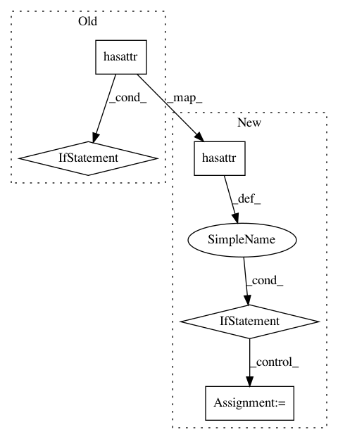

a637960fab61b66848a36e6a5caf0204c155af01,keras/engine/sequential.py,Sequential,add,#Sequential#Any#,94
Before Change
else:
// We were passed a regular layer, and it should
// know about its input shape. Otherwise, that"s an error.
if not hasattr(layer, "batch_input_shape"):
raise ValueError("The first layer in a "
"Sequential model must "
"get an `input_shape` or "
"`batch_input_shape` argument.")
batch_shape = layer.batch_input_shape
dtype = layer.dtype
// Instantiate the input layer.
x = Input(batch_shape=batch_shape,
After Change
batch_shape = first_layer.batch_input_shape
dtype = first_layer.dtype
if hasattr(first_layer, "batch_input_shape"):
batch_shape = first_layer.batch_input_shape
dtype = first_layer.dtype
// Instantiate the input layer.
x = Input(
batch_shape=batch_shape,
dtype=dtype,
name=layer.name + "_input")
// This will build the current layer
// and create the node connecting the current layer
// to the input layer we just created.
layer(x)
set_inputs = True
else:
// The layer doesn"t know about its expected shape.
// We will have to
// build the model lazily on `fit`/etc.
batch_shape = None
else:
// Corner case where the user passes an InputLayer via `add`.
assert len(layer._inbound_nodes[-1].output_tensors) == 1
set_inputs = True
In pattern: SUPERPATTERN
Frequency: 3
Non-data size: 5
Instances
Project Name: keras-team/keras
Commit Name: a637960fab61b66848a36e6a5caf0204c155af01
Time: 2018-05-01
Author: francois.chollet@gmail.com
File Name: keras/engine/sequential.py
Class Name: Sequential
Method Name: add
Project Name: keras-team/keras
Commit Name: f04fdec9e61eabe9750af00f56c18bdde8972045
Time: 2015-06-27
Author: francois.chollet@gmail.com
File Name: keras/layers/core.py
Class Name: Layer
Method Name: get_params
Project Name: keras-team/keras
Commit Name: c4c4fac1aed6ccc84d2f21028ebdfd03213709aa
Time: 2016-11-15
Author: francois.chollet@gmail.com
File Name: keras/engine/topology.py
Class Name: Container
Method Name: updates